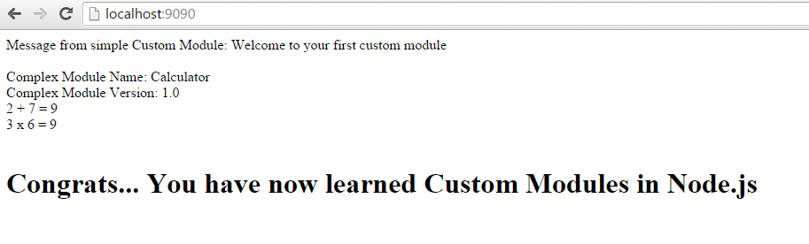

Learning Custom Modules - Hands on Node.js Tutorial
Modules in NodeJS are great ways to create reusable codes. NodeJS installation itself comes bundled with a bunch of core modules, like http, fs etc that gives us all the basic functionalities of Node. But very often we will feel the need to create our own custom modules to hold the logic for whatever magical thing we are trying to create with our server. So, let's directly dive into creating our simple module.
In this tutorial I will assume that you already know how to create a simple basic server with Node.JS...
But if you don't know or need a brush up, just look at
How to create your first Node.JS server and you will be good to go just in no time.
Now, let's create a folder name "custom_modules" where our server.js file is residing and inside "custom_modules" folder create a file named "simpleModule.js" and start typing the code below in it. Don't just blindly copy paste, but also read the code comments to understand what each line is doing and why that line is in there at the first place...
/*
* Since this is only another JavaScrpt file, we can write
* any code that is a valid JavaScript. So, let's define a variable
*/
var msg = "Welcome to your first custom module";
/*
* Now whatever a module wants to share with the world,
* it must export that using... "exports" object
*/
exports.getMessage = function () {
return msg;
}
Whatever we need to share with the outside world from our custom module, we need to export it using "exports" (or "module.exports") object.
Now, let's import/load the module in our simple server using "require".
/*
* load the core module "http"
*/
var http = require("http");
/* Now let's load the custom module, using "require",
* Store the imported module object in any variable, I will use "simpleModule"
* And yeah, we can drop the .js extension anytime in node.js world
*/
var simpleModule = require('./custom_modules/simpleModule');
/*
* now create a server with our reuqest handler callback function
*/
var server = http.createServer(handleRqst);
/*
* our request handler function
*/
function handleRqst (request, response) {
/*
* set the proper content type for browser to
* understand what you are sending
*/
response.writeHead(200, {'content-type':'text/html'});
/*
* let's now use the getMessage function from our module simpleModule.js
*/
var msg = simpleModule.getMessage();
response.end("Message from simple Custom Module: " + msg);
}
/*
* now give the server a port to listen to...
*/
server.listen(9090);
/*
* let's leave a message for ourselves in console/terminal
*/
console.log('Server is running at localhost:9090');
Go to command prompt in windows, or terminal in mac or linux. Navigate to the directory where your server.js file is saved. and type,
node server
//yes you can omit the ".js" extension
Now hit the browser with
"http://localhost:9090/" and Bingo! you should see the message :
Message from simple Custom Module: Welcome to your first custom module
You can terminate/stop the server anytime by pressing Ctrl+C in your console.
Now let's stop the server and create a Complex Custom Module...
Let's create a file "complexModule.js" inside our "custom_modules" directory. Type the code below inside this file. Read the comments in the code and you should understand what it does...
//Let's define a object
var calc = {};
//let's define some properties
calc.moduleName = "Calculator";
calc.version = "1.0";
//Let's define some functions
calc.add = function (n1, n2) {
return (n1+n2);
};
calc.multiply = function (n1, n2) {
return (n1*n2);
}
//Let's export it,
//"exports" and "module.exports" refers to the same object, So, Don't panic...
module.exports = calc;
Use it in your server.js file following the same steps as before... The complete code should look something like this,
/*
* load the core module "http"
*/
var http = require("http");
/*
* Now let's load the custom modules
*/
var simpleModule = require('./custom_modules/simpleModule');
var complexModule = require('./custom_modules/complexModule');
/*
* now create a server with our reuqest handler callback function
*/
var server = http.createServer(handleRqst);
/*
* our request handler function
*/
function handleRqst (request, response) {
/*
* set the proper content type for browser to
* understand what you are sending
*/
response.writeHead(200, {'content-type':'text/html'});
/*
* let's now use the getMessage function from our module simpleModule.js
*/
var msg = simpleModule.getMessage();
response.end("Message from simple Custom Module: " + msg);
/*
* And now we use our complex module
*/
response.write("<br/><br/>");
response.write("Complex Module Name: " + complexModule.moduleName);
response.write("<br/>br/<br/>");
response.write("Complex Module Version: " + complexModule.version);
response.write("<br/>");
response.write("2 + 7 = " + complexModule.add(2,7));
response.write("<br/>");
response.write("3 x 6 = " + complexModule.add(3,6));
response.write("<br/><br/>");
response.end("<h1>Congrats... You have now learned Custom Modules in Node.js</h1>");
}
/*
* now give the server a port to listen to...
*/
server.listen(9090);
/*
* let's leave a message for ourselves in console/terminal
*/
console.log('Server is running at localhost:9090');
Now run your server and refresh your browser... Voila!!! you have successfully added Node.js custom modules in your toolbelt,

Any question/suggestion? Let me know in the comments below...